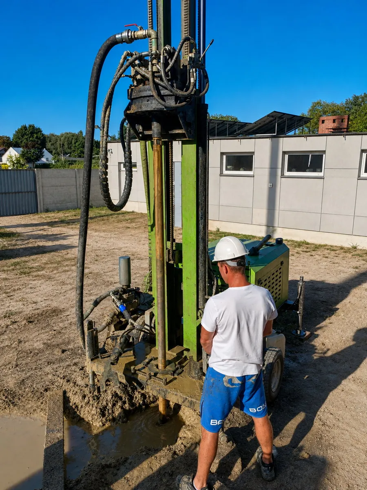

Wyróżniona realizacja
Ciepło z ziemi w domu, który już stoi
Nie potrzebujesz pustej działki ani budowy. Tu wjechaliśmy na zagospodarowany teren i wywierciliśmy kilka metrów od ściany domu, między gotowym ogrodzeniem a sąsiadami. Wjazd i miejsce na maszt sprawdzamy na oględzinach, przed umową, żeby dzień wiercenia nie był dla Ciebie niespodzianką.
Rodzaj pracOdwiert pionowy pod sondy
SprzętWłasna wiertnica i ekipa DEWAX
MetodaWiercenie na płuczkę
Dla CiebieProtokół szczelności, dokumentacja
Miejscowość, metraż, model pompy i zużycie prądu po sezonie podajemy przy wycenie, dla realizacji porównywalnych z Twoim domem.